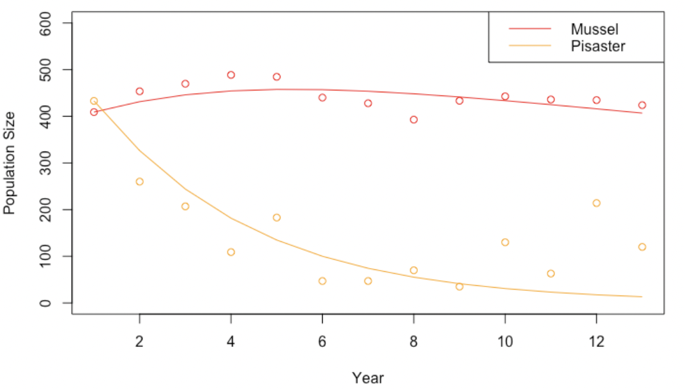
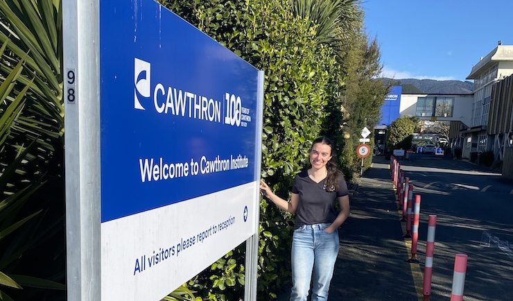
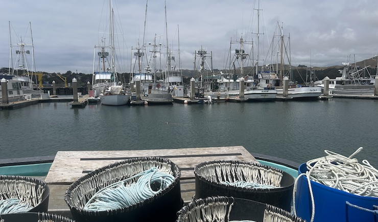

Applied math, theoretical ecology, and the impact of climate change...
I am driven by questions around how climate change impacts the environment, and how we can project, plan, and improve persistence and resilience in this future. I am currently exploring research topics around spatial distributions of populations, extreme events, and uncertainty.
Please keep checking back as I develop more research projects!
Transients

In systems with more than one stable state, changes between regimes can occur quickly when a “tipping point” is reached.
However, these transitions may not always be so clear, especially when considering stochastic disturbances.
Long transients can occur when population dynamics dramatically slow around a bifurcation point, even after the point is passed.
In this case, common observational data on the behavior of a system in a transient state is virtually identical to the behavior
of a system in a stable state; it can be incredibly difficult to determine which cases it is. This has direct implications for
management, as management strategies can vary between the two cases. I am currently exploring more about when we can determine
if a system is trapped in a long transient state versus a stable state, specifically using the information gained after a
disturbance.
Coral Systems
 Coral reefs are a key in maintaining ecological
diversity, however, in part due to natural disasters such as hurricanes, bleaching events, and large-scale predation like the
crown-of-thorn starfish outbreaks, many coral systems are quite degraded. As patchy reef systems become more common, the size,
clustering, or overall connectivity of these patches play a key role in overall understanding, so I am currently working
towards improving understanding of persistence of coral reefs, using a spatial framework to model connectivity and disturbances.
Coral reefs are a key in maintaining ecological
diversity, however, in part due to natural disasters such as hurricanes, bleaching events, and large-scale predation like the
crown-of-thorn starfish outbreaks, many coral systems are quite degraded. As patchy reef systems become more common, the size,
clustering, or overall connectivity of these patches play a key role in overall understanding, so I am currently working
towards improving understanding of persistence of coral reefs, using a spatial framework to model connectivity and disturbances.
Papers:
- Bhaskar, D. et al. “Diffusion-based methods for estimating curvature in data." ICLR 2022
Workshop on Geometrical and Topological Representation Learning, Virtual, Apr. 2022.
openreview.net/pdf
- Paige, Jennifer Nicole. “Using Differential Forms to Find Symmetries in the Noh Problem for an Ideal Gas in a Spherical System.” Los Alamos National Laboratory. 28 Jan. 2020. LA-UR-20-20859.
- Davis, Diana et al. “Assessing Congressional Districting in Maine and New Hampshire.” 12 Nov 2020. arXiv:2011.06555v1.
- Under review: Renninger, K. Ann et al. “PD Supporting CS and Math Integration: Implications of Teacher Interest and Confidence for Workshop Design.” Educational Studies, Swarthmore College.
Conferences & Presentations:
- Upcoming: Lead co-organizer for The Future of California Fisheries: Range Shifts and a
Changing Ocean Conference, UC Davis, 7 June 2024.
- Upcoming: Paige, J. “A spatial understanding of coral dynamics under multiple stressors.”
Sustainable Oceans Annual Symposium, UC Davis, 5 June 2023.
- Invited participant at Geometric and Topological Methods in Data Science Conference, ICERM,
Dec. 2021.
- Paige, J., MacDonald, K.,Thomas, D.,. Zhao, S. “Towards Robust Curvature Computation in
Point Clouds.” University of Connecticut’s REU Vir(tu)al Conference. Aug. 2021.
- Paige, J., MacDonald, K.,Thomas, D.,. Zhao, S. “Towards Robust Curvature Computation in
Point Clouds.” Yale’s SUMRY 2021 Weekly Program Symposiums. July-Aug. 2021.
- Holland, Troy et al. “A Case Study of Wildfire/Atmosphere Coupling on Complex Topography.”
Los Alamos National Laboratory. 11 May 2018. LA-UR-18-24156.
News

NSF Sustainable Oceans Intership: New Zealand!
My summer intership at the Cawthron Institute studying dispersal

NSF Sustainable Oceans Fieldtrip!
A roadtrip up the coast of California to meet stakeholders
{kind=link}